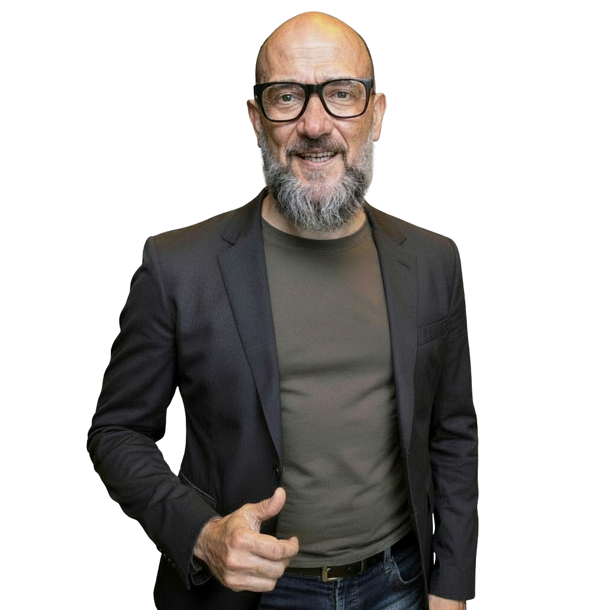

Ich übersetze Geschäfts-Bedürfnisse in funktionierende Systeme — und dirigiere KI so präzise, dass am Ende Agentur-Qualität rauskommt.
„Service als Choreografie, jede Sekunde ein Workflow."
„Ich habe mir das Coden nicht erklären lassen. Ich habe es gebaut."
Erst KI-gestützte Content- und Kommunikationsarbeit — dann der Schritt zur echten Orchestrierung: Workflows, Pipelines, Systeme.
636 Unterrichtseinheiten, Trainer von Zalando, XING, SumUp, OTTO. Alle Belege unten sind in diesem Zeitraum entstanden.
Klarheit ist der Skill, nicht Syntax. Ich sage präzise, was ich will, und steuere die Umsetzung bis Agentur-Qualität rauskommt.
Jede Karte ist ein Live-System. Klicken statt glauben.
Ein Produkt end-to-end orchestriert: Next.js + FastAPI + Supabase, deployt auf eigenem VPS (Docker). Konzipiert, gebaut, online gebracht.
3D-Szenenfahrt auf Award-Niveau.
Konzipiert, gebaut, bepreist, live.
~36 produktive n8n-Workflows auf eigener Instanz, dazu ein eigenes Engineering-Toolkit (20+ Python-Scripts) und ein Voice-Agent end-to-end (ElevenLabs + n8n, geführter Intake mit Consent-Phase).
Eine datengetriebene Galaxie, die sich selbst zeichnet.
+ Effekt-Katalog Tier 1–Ω · Build-in-Public-Lerntagebuch · 90-Tage-Content-Serie
Ich nutze KI nicht nur — ich engineere sie: eigene Skills gebaut, Multi-Agent-Orchestrierung, Hooks & Memory, Production auf eigenem VPS. Diese Seite und meine Showcases wurden selbst über orchestrierte Agenten gebaut.
Eigene Skills · Projekte & Ordner · Systeme · Cowork · Terminal — KI-natives Arbeiten end-to-end.

Vollzeit · Remote DACH / EMEA · Solutions Engineering, CSM & AI-Automation.